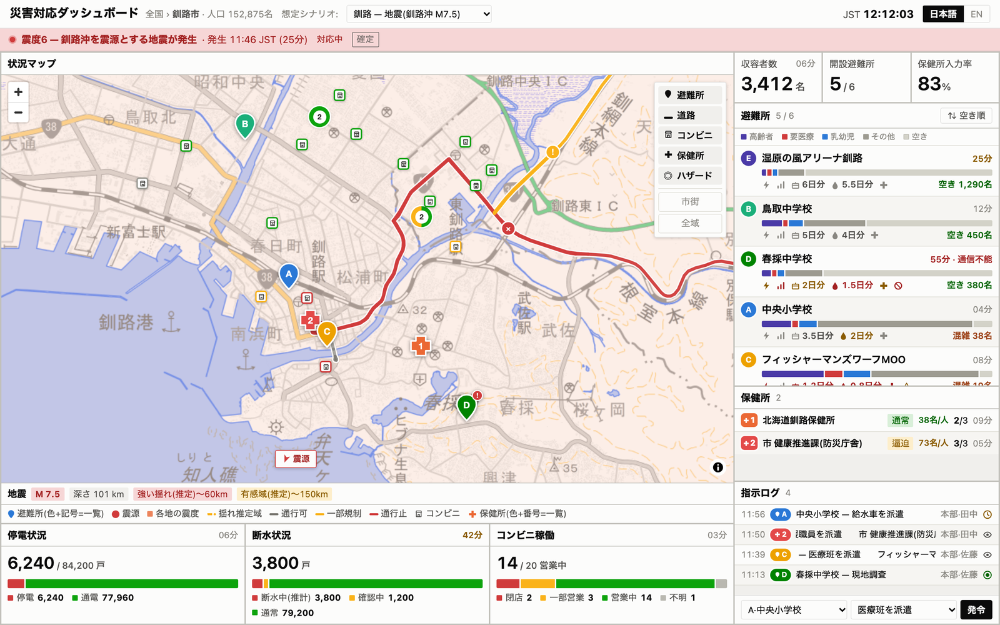
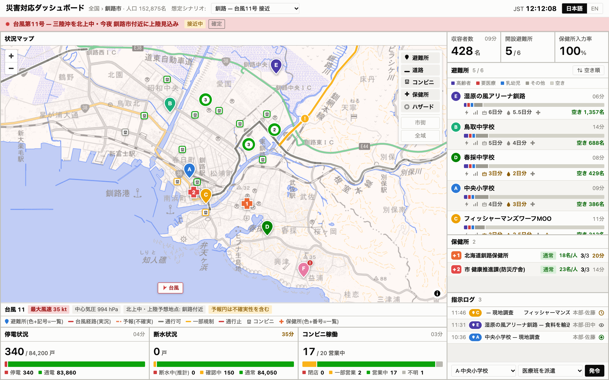
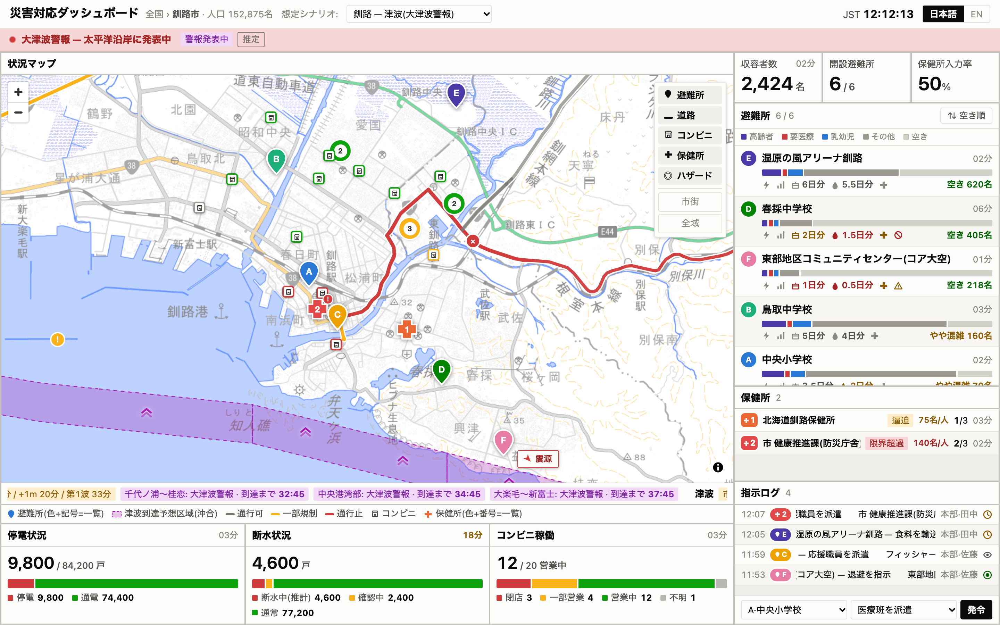
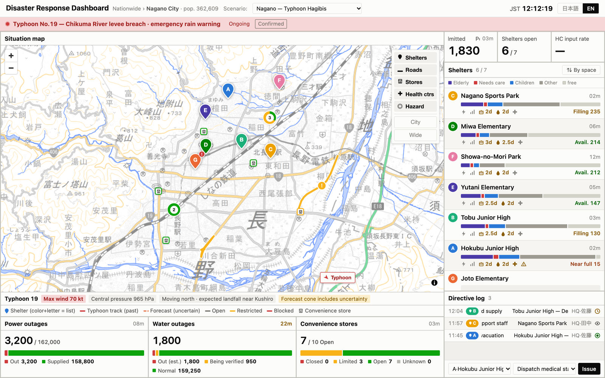

Emergency Dashboard
Prototype dashboard for Japanese emergency officers to coordinate disaster response on a map, built on mock data.
- JavaScript
- MapLibre GL




Prototype dashboard for Japanese emergency officers to coordinate disaster response on a map, built on mock data.



